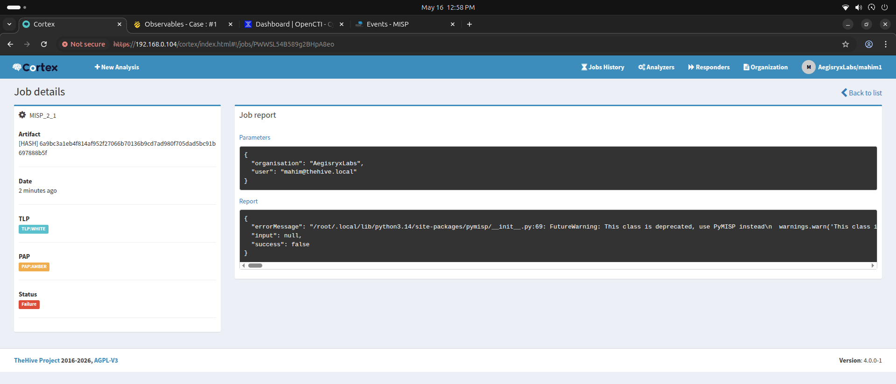

1. Architecture Overview
The goal was to build a fully integrated, open-source SOC/SOAR pipeline capable of handling complex threat detection, automated enrichment, and incident management.

Detection
Suricata IDS for network-level threat detection.
Correlation & Alerting
Wazuh SIEM for endpoint security and log correlation.
Incident Management
TheHive for case management and orchestration.
Automated Enrichment
Cortex + multiple analyzers (VirusTotal, AbuseIPDB).
Threat Intelligence
OpenCTI + MISP + external feeds for comprehensive CTI.
2. Core Features & Tool Integrations
Scalable Worker Isolation (Cortex & Docker)
To maintain strict security boundaries and simplify dependency management, Cortex 4.0.0 is configured to use a containerized job runner. Instead of executing scripts directly on the host JVM, each threat analyzer runs in an isolated, lightweight Docker container.

Technical Execution
Analyzers are packaged as Docker images (e.g., Python3/Alpine base) and mapped to specific JSON definition files. The job runner dynamically spins up the container, injects the observable (IP, hash, domain), and outputs clean JSON enrichment reports back to Cortex.
Structured Threat Intel Sharing (MISP & OpenCTI)
The architecture unifies threat intelligence feeds by pairing MISP (for automated indicator sharing) with OpenCTI (for threat relation graphing). Analysts benefit from an aggregated database of threat actors, techniques, and indicators of compromise (IOCs).

Closed-Loop Integration
When an alert triggers in Wazuh, it is pushed to TheHive. Cortex automatically initiates API calls to MISP and OpenCTI to verify if the observable matches known campaigns, tagging it automatically to give analysts immediate threat context.
Autonomous Incident Enrichment
By linking case management with automated responders, the system significantly reduces response times. Security incidents are automatically enriched with reputation details, WHOIS records, and sandbox analysis results.
Automated Workflow
Instead of manually querying external threat databases, the system triggers parallel runs of the VirusTotal, AbuseIPDB, and self-hosted MISP analyzers the moment a file hash or external IP is added to a ticket.
3. Proof of Concept
Watch the complete Unified Cyber Defense SOAR Stack in action below. This demonstration showcases the automated detection, correlation, and response capabilities of the integrated platform.
4. Final Integration Success
After resolving the configuration, caching, and SSL issues, the entire SOAR pipeline operated seamlessly. Cortex successfully executed Docker-based analyzers to enrich threat intelligence data from MISP and OpenCTI.